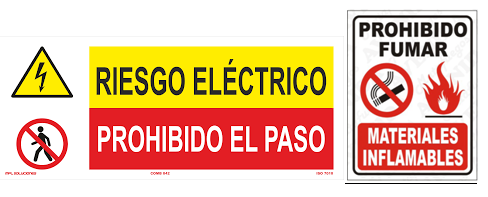

Suceso eventual o acción de que involuntariamente resulta un daño para las personas o las cosas.
Es la violación de un procedimiento que se considera seguro, es decir, es la negligencia de una persona lo que produce el principal factor de inseguridad.
Ejemplos:
Es aquella condición que forma parte del objeto que ha estado directamente ligada al accidente y que podría haber sido protegida o evitada.
Ejemplos:
Las normas de seguridad son un conjunto de medidas destinadas a proteger la salud de todos, prevenir accidentes y promover el cuidado de los bienes materiales. Es importante respetar las normas de seguridad cuando hacemos todo tipo de trabajos y muy especialmente cuando la electricidad está relacionada. El ser humano es vulnerable cuando entra en contacto con ella, pudiendo ocasionarle daños muy graves a su salud e incluso quitarle la vida.
Ante la presencia de un accidente, la victima puede necesitar ser socorrida con urgencia.
Llamamos primer auxilio el conjunto de actuaciones y técnicas que permiten la atención inmediata de un accidentado, hasta que llegue la asistencia médica profesional.
Cuando una persona se expone en contacto con la electricidad se origina lo que se conoce como un accidente eléctrico.
En estos casos, lo primero que hay que hacer es interrumpir el circuito eléctrico lo más rápido posible, tomando las medidas de precaución personal para evitar la electrocución del propio socorrista. Lo segundo es llamar al servicio de emergencias, es decir el 107 o 911.
Se definen como cualquier elemento destinado a ser llevado o sujetado por el trabajador para que lo proteja de uno o varios riesgos que puedan amenazar su seguridad, así como cualquier complemento o accesorio.
Los elementos de seguridad personal deben responder a las condiciones existentes en el lugar de trabajo, ser adecuados a los riesgos a proteger y adecuarse a la partes del cuerpo del trabajador mediante los ajustes adecuados.